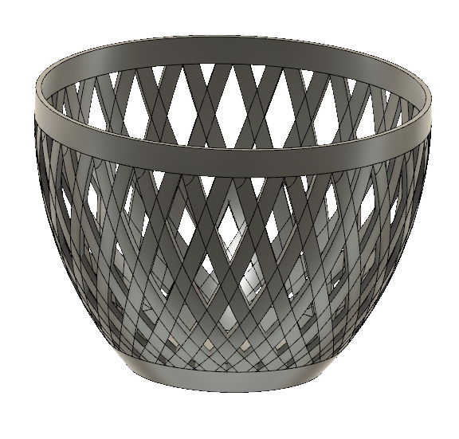
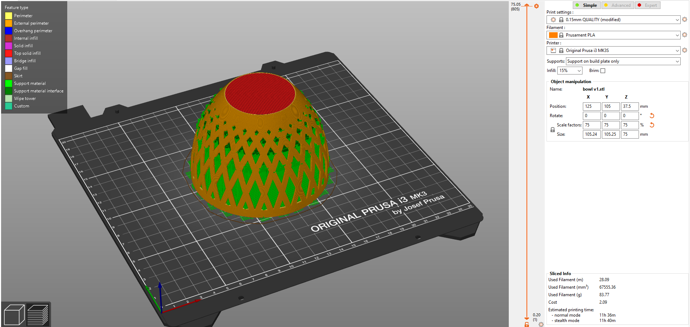
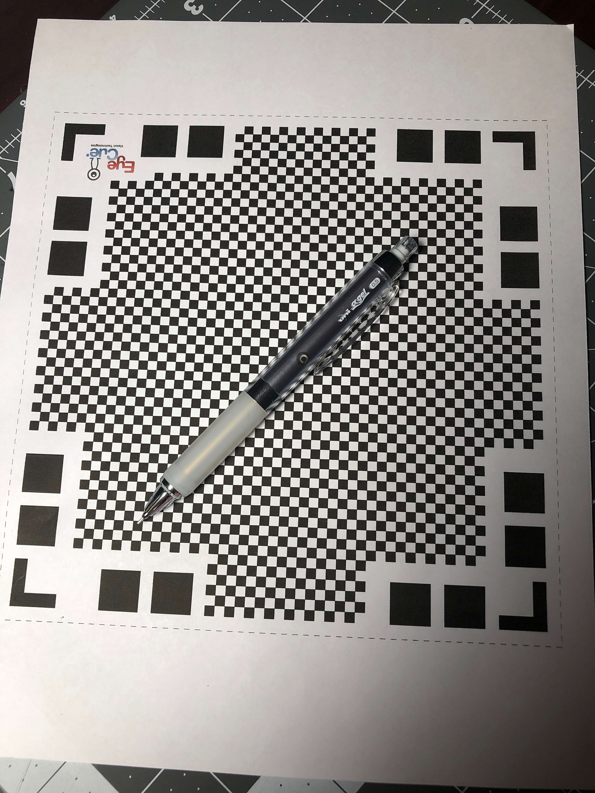
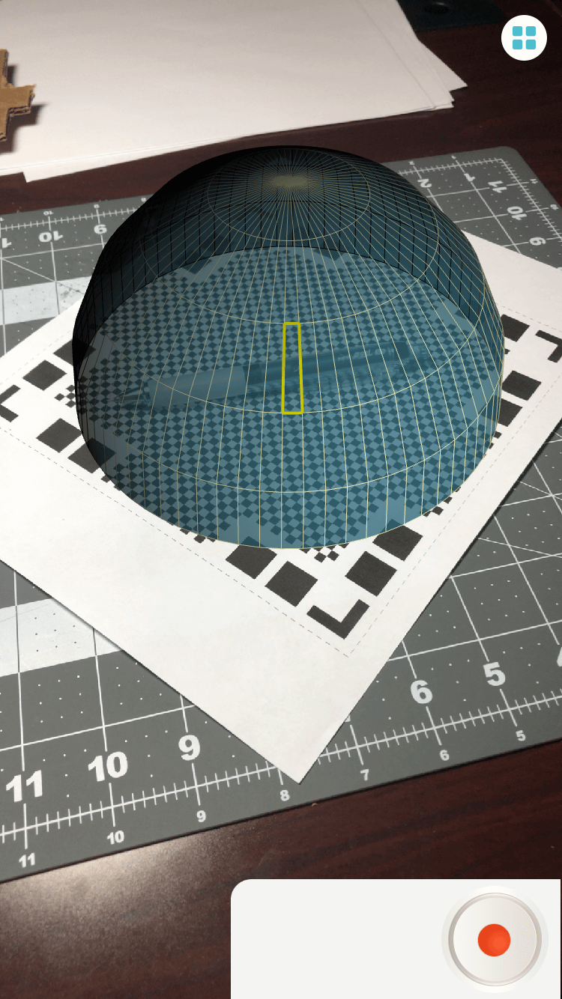

Class 6: 3D Design & Printing
July 9, 2020
Assignment:
1. Design and prepare to print (i.e. slice) either (a) a component you need for your final project or (b) a small object that could not be (easily) made by subtractive methods.
2. Scan something using a photogrammetry application, if you can get access to one.
Since my final project will be the creation of a Simon Says alarm clock, I only need to design a box for the clock. Before class, I had never thought about how ineffective it was to 3D print certain objects additively, but now I understand that some objects should rather be made subtractively. Thus, for my final project, I am going to make my box subtractively rather than additively by building a press-fit box using pieces cut by the laser cutter.
And so, for today's assignment, I chose to create a small object that could not be (easily) made by subtractive methods. After seeing the Fusion 360 tutorial for creating a lampshade last class, I decided to take some methods from the tutorial to create a bowl whose sides would create the illusion of being woven together. I decided on creating this type of bowl since I believe that it would be difficult to laser cut the design on the sides of the bowl due to the bowl's curved shape. In addition, the pattern requires symmetry, and it would be tedious to cut out so many different triangles with different dimensions while maintaining symmetry.
First, I created a basic sketch of half of a face of the bowl and used the revolve tool to make the sketch into the 3D bowl.

Then, I used the shell tool to hollow-out my bowl. Afterwards, I created two offset planes 5 mm from the top and bottom rim of the bowl and split the face of the bowl. After making the new top and bottom rims invisible, I created a sketch on the remaining face of the bowl, projecting the overall shape of the bowl. I drew two parallel lines spaced 6 cm apart and then used the extrude tool to intersect the bowl's face. Finally, I used the circular pattern tool on the new bodies to create the basket-looking design of the bowl.
Download my STL file here! And download the 3D model file here!
After exporting the bowl from Fusion 360 as a .stl file, I imported it into PrusaSlicer. Instead of printing the bowl right-side up, I felt that the bowl would probably be better printed right-side down with supports on the build plate in order to make sure the bowl doesn't cave-in on itself. I also scaled the bowl down to 75%.
Download my gcode file here!
For the second part of today's assignment, I looked through the AppStore to find a photogrammetry application to scan something in 3D. Since I have an iPhone 8, I couldn't use any apps that required a depth camera. I decided to try out Qlone. To use the app, I needed to print out a special mat to place the object on.

Initially, I tried to scan a pair of scissors, but this caused the app to crash, so the next object I tried to scan was my mechanical pencil. When looking through the camera, the app created a dome around the object I was trying to scan, and I had to rotate the paper to fill out each piece of the dome.

Although I would have to pay extra to export the 3D scan as a .stl file, I was able to export this gif of the finished 3D scan!

This week, I also worked on the components that I would need to laser cut for my final project. Check out my progress here!